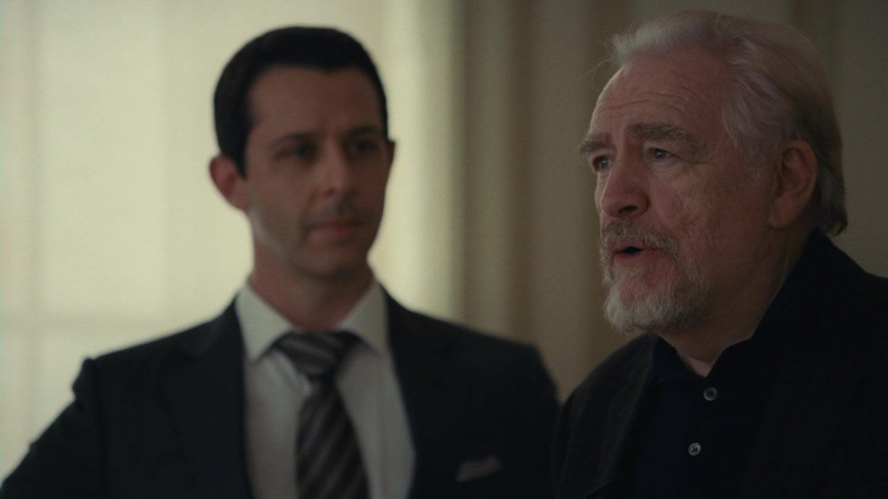
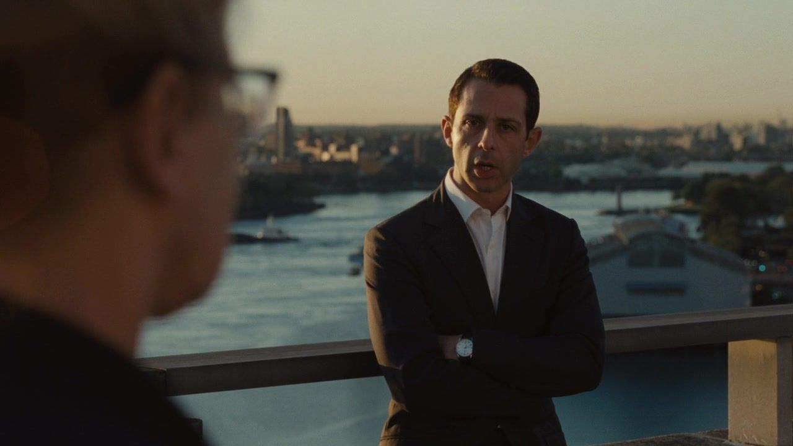
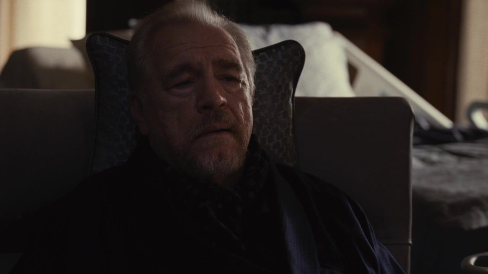
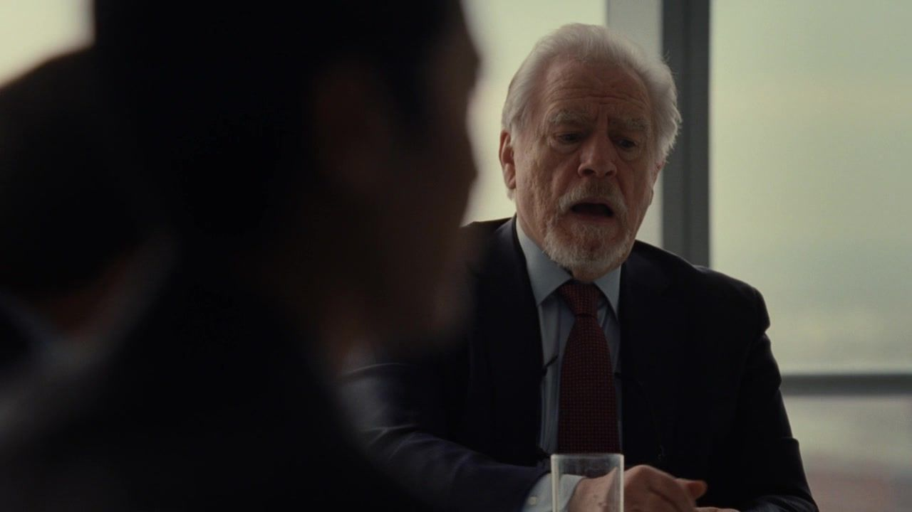
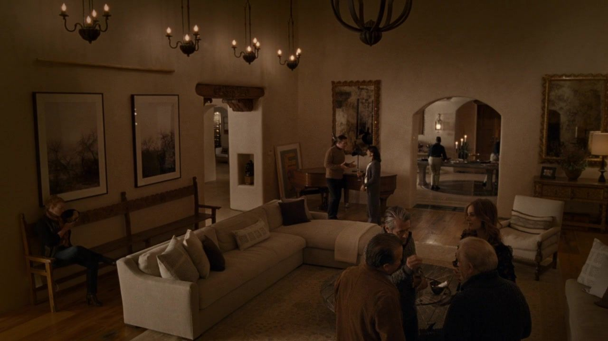
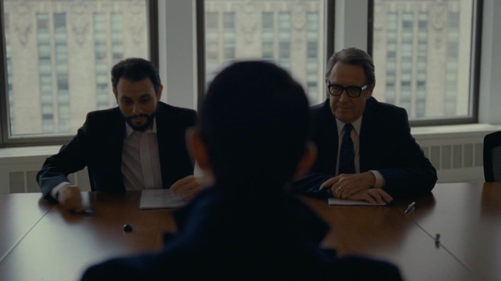
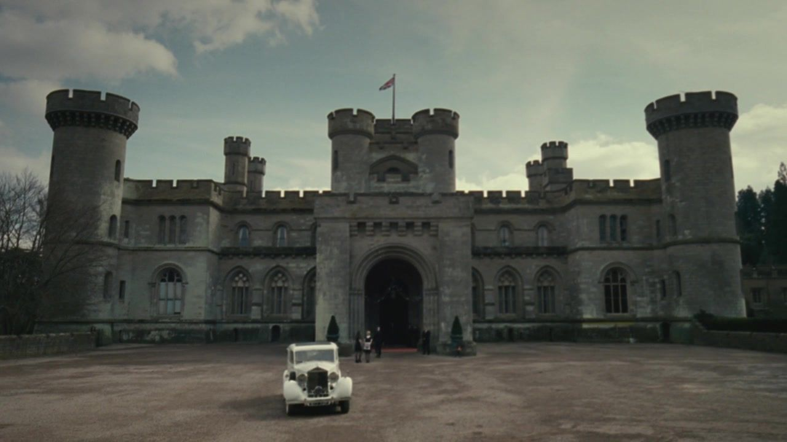
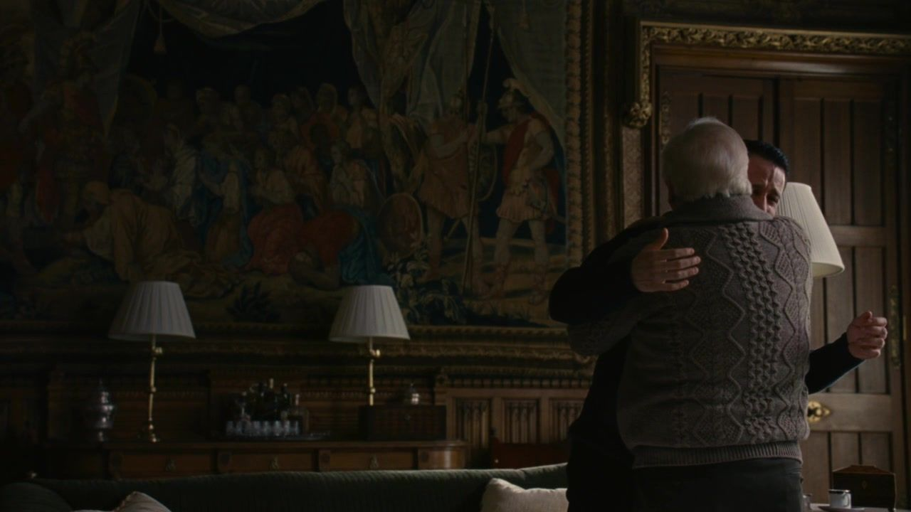

从这里进入罗伊家 / START HERE
EPISODE 01 / S01E01
Celebration
他等的是王位，还是父亲的认可？
八十岁生日，本该是一场交接的前奏。肯德尔想把新媒体收购和接班消息放在同一天，证明自己已经准备好；洛根却把子女召到一起，先要求他们交出一部分未来的决定权。午餐还没开始，庆典已经变成考核。首集真正残酷的地方在于：父亲可以随时改变考题，孩子们却仍然盼着从他那里拿到及格。
生日聚会中，父子占据同一画面的不同位置。｜HBO · 本集截图

HBO / 2018 · 第一季完整档案
他们想继承的，
是帝国，还是父亲的认可？
从八十岁生日，到一场英国婚礼。
沿着每一次选择，看清罗伊家族的权力与亲情。
10单集档案
93剧情节点
32冲突深读
105本季剧照
封面 · 生日聚会中，父子占据同一画面的不同位置。｜HBO · 本集截图
SEASON 01 / THE COMPLETE COLLECTION
剧情推进 · 人物关系 · 冲突深读
台词与画面，放回它发生的时刻。
阅读范围目录完整展示各集剧照与导读，涉及对应剧情。单篇剧透截至该集，不涉及第二季。单集在新标签页打开 ↗
从这里进入罗伊家 / START HERE
EPISODE 01 / S01E01
Celebration
八十岁生日，本该是一场交接的前奏。肯德尔想把新媒体收购和接班消息放在同一天，证明自己已经准备好；洛根却把子女召到一起，先要求他们交出一部分未来的决定权。午餐还没开始，庆典已经变成考核。首集真正残酷的地方在于：父亲可以随时改变考题，孩子们却仍然盼着从他那里拿到及格。
生日聚会中，父子占据同一画面的不同位置。｜HBO · 本集截图

02接班 / ACT IEPISODE 02 / S01E02
Shit Show at the Fuck Factory
医院的等待室变成临时会议室。谁掌权、谁签字、谁能靠近病床，都被迫在父亲沉默时作出决定。
医院窗边：杰丽向肯德尔说明公司债务问题的同场镜头。｜HBO · 本集截图

03接班 / ACT IEPISODE 03 / S01E03
Lifeboats
肯德尔接手债务危机，用老朋友的资本换取喘息空间。公司暂时得救，但他是否看清了救援者站在哪一边？
康复中的洛根听肯德尔汇报后的反应镜头。｜HBO · 本集截图
 04反击 / ACT II
04反击 / ACT IIEPISODE 04 / S01E04
Sad Sack Wasp Trap
洛根急于公开复位，汤姆却在新职位上接到邮轮旧案。慈善、致辞与公关把家族聚到一起，也把风险向下传递。
洛根在慈善晚宴的台上致辞。｜HBO · 本集截图
 05反击 / ACT II
05反击 / ACT IIEPISODE 05 / S01E05
I Went to Market
感恩节的团聚让经营分歧变成家庭伤害。伊万的忠诚、格雷格留下的文件和孩子遭遇的一击，分别改变了下一步的筹码。
家宴餐桌旁的希芙与罗曼。｜HBO · 本集截图

06反击 / ACT IIEPISODE 06 / S01E06
Which Side Are You On?
肯德尔筹齐反对父亲的支持，却无法按时回到董事会。程序、地理与恐惧叠在一起，私下联盟在洛根面前发生改变。
洛根留在董事会现场，面对提出不信任的同事。｜HBO · 本集截图

07反击 / ACT IIEPISODE 07 / S01E07
Austerlitz
牧场上的家庭治疗带着修复形象的目的。肯德尔的复吸、希芙的政治选择与父亲的旧伤，让表面的和解越来越难维持。
家人在牧场客厅参加家庭治疗。｜HBO · 本集截图

08脱身 / ACT IIIEPISODE 08 / S01E08
Prague
一次改在纽约的单身派对，混合了欲望、童年旧事与资本谈判。肯德尔得到退出家族公司的机会，却提出另一条更激烈的路。
肯德尔与斯图伊、桑迪就收购安排会面的本集尾声画面。｜HBO · 本集截图

09脱身 / ACT IIIEPISODE 09 / S01E09
Pre-Nuptial
婚前聚会让秘密、母亲的尖刻与政治交易同时到场。希芙以邮轮旧案谈条件，肯德尔则发现收购时间已不能由自己决定。
英国城堡的本集结尾外景；船上兄妹互动与收购谈话另见正文。｜HBO · 本集截图

10脱身 / ACT IIIEPISODE 10 / S01E10
Nobody Is Ever Missing
正式收购要约与婚礼同日发生。肯德尔一度准备越过父亲，夜间事故却使他重新依赖父亲的保护与叙述。
本集结尾：洛根拥抱崩溃的肯德尔。｜HBO · 本集截图
THREE MOVEMENTS
连起来读，看见每一次转折怎样留下下一场冲突。
THE FAMILY / WHERE IT ALL BEGINS
先从第一集认识他们。
在每篇的关系图中，继续追踪立场的变化。

保留最终决定权，也安排身后的影响力。

接掌公司，更想让父亲承认自己够资格。

保留独立判断，也不轻易放弃家族内部的话语权。

重新进入公司，并争取足够高的位置。
人物导读仅使用第一集信息；角色照均取自第一集。演员与原图出处 ↗
LOOK CLOSER. READ AGAIN.
每篇区分剧情事实与个人解读；逐张图片和资料来源列于篇末。